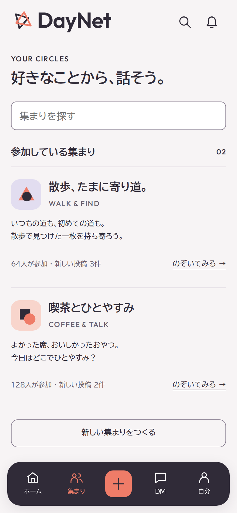
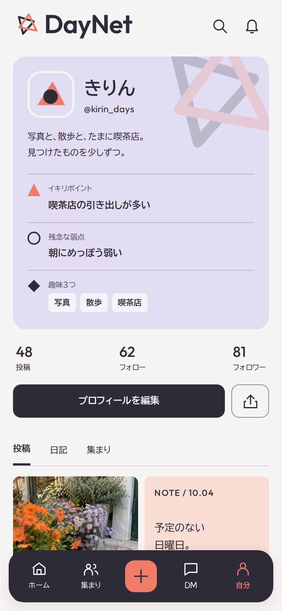
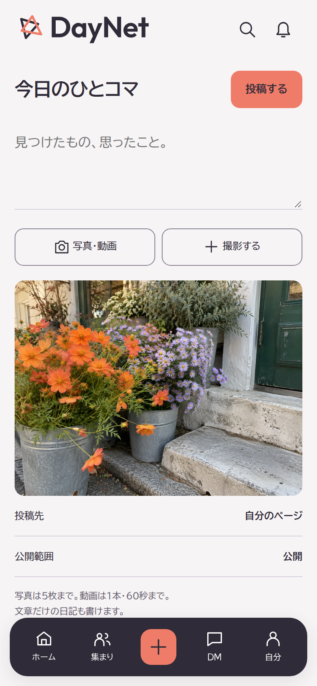

DAYNET / MOBILE EXPERIENCE 04
写真を投稿する。趣味で集まる。日常を話す。
01 / ホーム
写真へすぐ届く、軽いホーム。
02 / 集まり

好きなことから、会話へ。
03 / プロフィール

3つの人柄が、ひと目で伝わる。
04 / 投稿

写真・動画・日記を、気軽に。
DESIGN PREVIEW · FICTIONAL POSTS AND PEOPLE · NOT A DEPLOYED APPLICATION